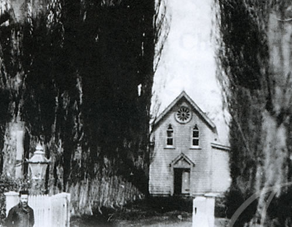
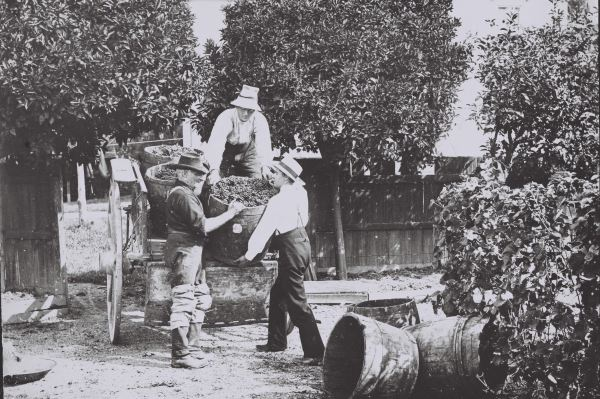
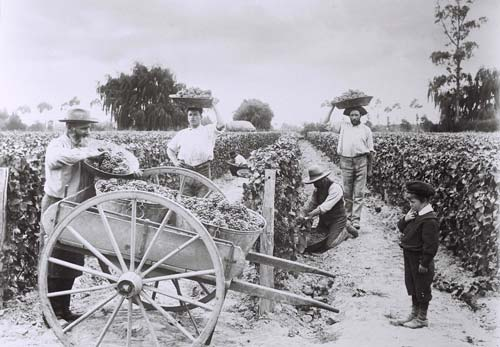
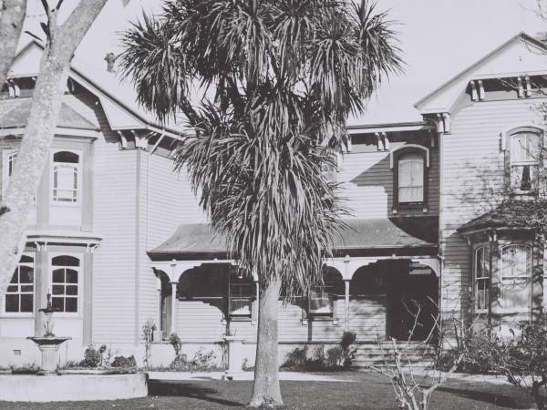

History
In 1856, French missionaries from the Society of Mary purchased the land on which The Old Church now stands, opening the original pseudo-gothic style wooden church in December 1863.
The church was extended once in 1874 (when it was cut in two to allow a new transept to be inserted) and again in 1892 (a major renovation which increased the size of the building six-fold).
Other mission buildings sprung up to create schools for local children and accommodation/seminaries for the priests and brothers. In their land around the church, the missionaries planted grape vines, fruit trees and crops.
They were popular, industrious and successful farmers. Their warm hospitality, easy friendship and legendary culinary skills made the mission a favourite stopping place for travellers.
However, in 1910 leaders of the Society of Mary decided to shift the mission to Greenmeadows. Only the church and the school were left at Meeanee. The school was demolished by 1926 but the church remained. The building now called The Old Church Villa was added in 1913 to house the priests.
Finally in the 1970s, the church’s location and size became inconvenient for the growing population of Taradale. A new church was built in Osier Road and the Meeanee church was deconsecrated.
It became home to the Taradale Pottery Club until the Society of Mary sold the property to some Napier businessmen. They in turn, sold it to Karen Sandler who converted it into a restaurant and wedding venue.
Many people have lived, worshipped, celebrated and worked on this unique property and we are pleased to continue its tradition of happy industry and the celebration of life’s special moments.